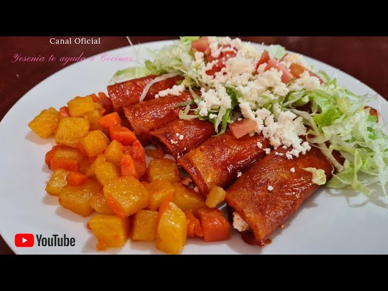

¿De qué tienes ganas hoy?

Simplemente la cena ideal... taquitos con tortilla frita bañada en salsa de chile ancho, rellenos de carne deshebrada, papa o frijoles.
Acompañados de papas, zanahorias y patitas en vinagre.